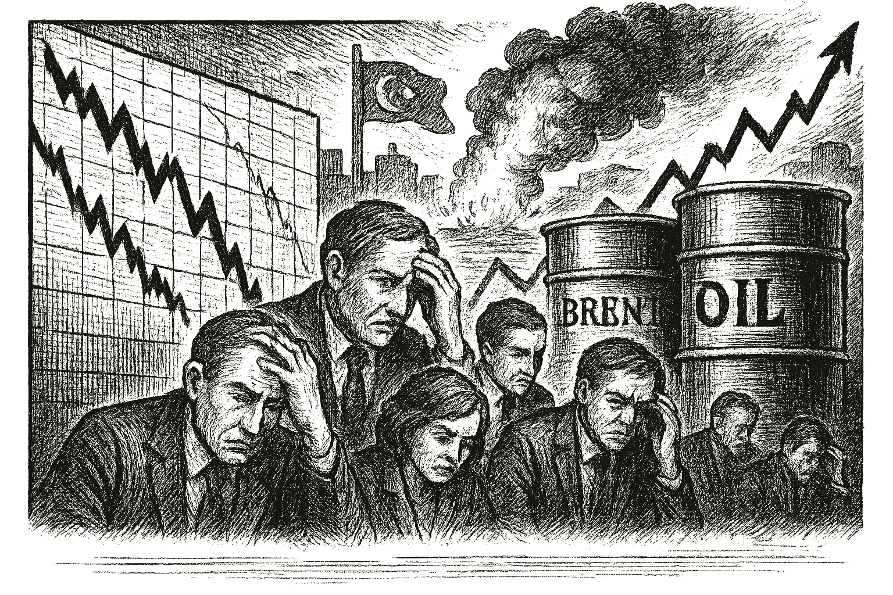

SPY
Current: $760.16Change: -3.09 (-0.40%)
Updated:
Source: yahoo_chartFreshness: fresh


Investor sentiment is shaken by mixed earnings from major tech firms and rising oil prices amid geopolitical tensions.

Today's Headline: Market Faces Pressure as Earnings Reports Disappoint and Oil Prices Surge
Setup: Investor sentiment is shaken by mixed earnings from major tech firms and rising oil prices amid geopolitical tensions.
Primary Topic: Market Reactions to Earnings and Oil Prices
Specific Development: Earnings from Tesla and Meta have fallen short of expectations, contributing to a decline in major indices, while Brent crude prices have surged above $111.
Why Today Is Different: The combination of disappointing earnings and rising oil prices creates a unique pressure point for investors, impacting market sentiment significantly.
Secondary Topics: Geopolitical tensions; Inflation concerns; Interest rates
Tone: cautious
Sectors: Technology; Energy; Consumer Discretionary
Companies: Tesla; Meta; Brent
Commodities: Brent; WTI
Countries Or Regions: United States; Iran
Macro Themes: Earnings season; Inflation; Geopolitical risks
Why This Story: The interplay between disappointing earnings and rising oil prices could set the tone for market movements in the coming days.
Why This Matters: Micron is part of Zacks Earnings Preview is the clearest current evidence-led frame for Joshua's observation-only review; missing facts remain explicit intelligence gaps.

Summary: Global markets reacted negatively to mixed earnings reports and rising oil prices, with major indices declining.
What Happened Overnight: US equity futures fell, reflecting concerns over disappointing earnings from major tech firms.
What Changed Materially: Brent crude prices surged while major indices faced downward pressure.
Which Assets Sectors Are Affected: Technology and energy sectors are particularly impacted.
Noise Or Real Regime Input: This appears to be a real regime input due to the combination of earnings misses and geopolitical tensions.
Why This Matters: Joshua can use verified cross-asset moves and deterministic risk context while keeping causation explicitly unresolved.

UUUU Earnings Expectations — 2026-10-30, Time Unavailable
Consensus EPS: $-0.03
Year-ago EPS: unavailable
Expected EPS growth: unavailable
Consensus revenue: $39.2M
Year-ago revenue: unavailable
Expected revenue growth: unavailable
Source: finnhub_earnings_calendar · As of: 2026-10-23T14:15:34.191206+00:00 · Freshness: current
SPCX Earnings Expectations — 2026-10-20, Time Unavailable
Consensus EPS: $0.14
Year-ago EPS: unavailable
Expected EPS growth: unavailable
Consensus revenue: $13.0B
Year-ago revenue: unavailable
Expected revenue growth: unavailable
Source: finnhub_earnings_calendar · As of: 2026-10-23T14:15:34.191206+00:00 · Freshness: current
TSLA Earnings Expectations — 2026-10-20, After Close
Consensus EPS: $0.45
Year-ago EPS: unavailable
Expected EPS growth: unavailable
Consensus revenue: $28.4B
Year-ago revenue: unavailable
Expected revenue growth: unavailable
Source: finnhub_earnings_calendar · As of: 2026-10-23T14:15:34.191206+00:00 · Freshness: current
TSLA Earnings Expectations — 2026-10-21, After Close
Consensus EPS: $0.44
Year-ago EPS: unavailable
Expected EPS growth: unavailable
Consensus revenue: $28.4B
Year-ago revenue: unavailable
Expected revenue growth: unavailable
Source: finnhub_earnings_calendar · As of: 2026-10-23T14:15:34.191206+00:00 · Freshness: current
LTC Earnings Expectations — 2026-10-22, Time Unavailable
Consensus EPS: $0.52
Year-ago EPS: unavailable
Expected EPS growth: unavailable
Consensus revenue: $26.6M
Year-ago revenue: unavailable
Expected revenue growth: unavailable
Source: finnhub_earnings_calendar · As of: 2026-10-23T14:15:34.191206+00:00 · Freshness: current

- WOPR learning pipeline: Learning present — untrusted
- Candidates evaluated 24h: 0
- Current gate: Learning trust
- Notification ledger events in 24h: 1
- Pending orders created/canceled/filled/expired: 0/0/0/0
- Pending lifecycle interpretation: Pending-order cancellations have trackable reasons and no obvious rapid churn pattern.
- Portfolio risk: Label: High / Score: 93.0
- Latest intelligence gap report: intelligence_gap_report_2026-10-18.pdf
Why This Matters: The active gate is Learning trust, so the key question is why candidates are stopping before approval, not how to force trades.

- Sentinel role: infrastructure and operational status only.
- State: ONLINE
- Last successful validation: 2026-10-23T14:13:40.375702+00:00
- Payloads accepted/rejected: 28975/0
- Node health score: 100
Why This Matters: Sentinel is ONLINE, so Joshua should use its context only to the extent the latest accepted pulse is fresh and authenticated.

CANDIDATES MOVING THROUGH JOSHUA'S INVESTMENT-REVIEW WORKFLOW
FROZEN DAILY BRIEF SNAPSHOT | 2026-10-23T14:15:57.366029+00:00
QUEUE SUMMARY | Investment Ready: 0 | Waiting for Price: 0 | Waiting for Evidence: 2 | Research Underway: 2 | Governance Hold: 7 | Monitor Only: 0
Investment-ready status: No candidates are currently Investment Ready.
#5 NVDA - Waiting for Evidence
Joshua's Thesis: Positive thesis not yet established.
Why Waiting: Positioning gate failed.
Price: 212.65 now; 222.10 preferred entry
What Unlocks It: Clear valuation support; Evidence that the business quality matches the risk being taken; Independent evidence streams pointing the same way
Portfolio Fit: 0.0/100 — VERY LOW ↓
Portfolio Fit Drivers: projected Technology exposure 66.8%; projected AI infrastructure exposure 66.8%; candidate amount $100 vs $50 currently allocated
Candidate Risk: 97.9/100 — VERY HIGH ↑
Risk Drivers: projected Technology exposure 66.8%; projected AI infrastructure exposure 66.8%; candidate amount $100 vs $50 currently allocated
Next: Positioning status must no longer be warning. Owner: Joshua.
#6 AVGO - Governance Hold
Joshua's Thesis: Positive thesis not yet established.
Why Waiting: Governance gate has not cleared.
Price: 324.63 now; 357.70 preferred entry
What Unlocks It: Governance gate clears; Clear valuation support; Evidence that the business quality matches the risk being taken
Portfolio Fit: 0.0/100 — VERY LOW ↓
Portfolio Fit Drivers: projected Technology exposure 66.8%; projected AI infrastructure exposure 66.8%; candidate amount $100 vs $50 currently allocated
Candidate Risk: 97.9/100 — VERY HIGH ↑
Risk Drivers: projected Technology exposure 66.8%; projected AI infrastructure exposure 66.8%; candidate amount $100 vs $50 currently allocated
Next: Re-evaluate after the recorded gate clears. Owner: Columbo.
#8 QBTS - Governance Hold
Joshua's Thesis: Positive thesis not yet established.
Why Waiting: Governance gate has not cleared.
Price: 11.35 now; 17.52 preferred entry
What Unlocks It: Governance gate clears; Clear valuation support; Evidence that the business quality matches the risk being taken
Portfolio Fit: 0.0/100 — VERY LOW ↓
Portfolio Fit Drivers: projected Unclassified exposure 66.8%; projected Unclassified exposure 66.8%; candidate amount $100 vs $50 currently allocated
Candidate Risk: 97.9/100 — VERY HIGH ↑
Risk Drivers: projected Unclassified exposure 66.8%; projected Unclassified exposure 66.8%; candidate amount $100 vs $50 currently allocated
Next: Re-evaluate after the recorded gate clears. Owner: Joshua.
#12 PLTR - Governance Hold [Moved Up 15->12]
Joshua's Thesis: Positive thesis not yet established.
Why Waiting: Governance gate has not cleared.
Price: 194.65 now; 194.57 preferred entry
What Unlocks It: Governance gate clears; Clear valuation support; Evidence that the business quality matches the risk being taken
Portfolio Fit: 0.0/100 — VERY LOW ↓
Portfolio Fit Drivers: projected Technology exposure 66.8%; projected AI software exposure 66.8%; candidate amount $100 vs $50 currently allocated
Candidate Risk: 97.9/100 — VERY HIGH ↑
Risk Drivers: projected Technology exposure 66.8%; projected AI software exposure 66.8%; candidate amount $100 vs $50 currently allocated
Next: Re-evaluate after the recorded gate clears. Owner: Columbo.
#13 RCL - Governance Hold [Moved Up 14->13]
Joshua's Thesis: Positive thesis not yet established.
Why Waiting: Governance gate has not cleared.
Price: 275.57 now; 277.23 preferred entry
What Unlocks It: Governance gate clears; Clear valuation support; Evidence that the business quality matches the risk being taken
Portfolio Fit: 0.0/100 — VERY LOW ↓
Portfolio Fit Drivers: projected Unclassified exposure 66.8%; projected Unclassified exposure 66.8%; candidate amount $100 vs $50 currently allocated
Candidate Risk: 97.9/100 — VERY HIGH ↑
Risk Drivers: projected Unclassified exposure 66.8%; projected Unclassified exposure 66.8%; candidate amount $100 vs $50 currently allocated
Next: Re-evaluate after the recorded gate clears. Owner: Columbo.
#17 XRAY - Research Underway [Moved Up 20->17]
Joshua's Thesis: Positive thesis not yet established.
Why Waiting: Research evidence is still being gathered.
Price: 9.39 now; Preferred entry not established.
What Unlocks It: Clear valuation support; Evidence that the business quality matches the risk being taken; Independent evidence streams pointing the same way
Portfolio Fit: 0.0/100 — VERY LOW ↓
Portfolio Fit Drivers: projected Unclassified exposure 66.8%; projected Unclassified exposure 66.8%; candidate amount $100 vs $50 currently allocated
Candidate Risk: 97.9/100 — VERY HIGH ↑
Risk Drivers: projected Unclassified exposure 66.8%; projected Unclassified exposure 66.8%; candidate amount $100 vs $50 currently allocated
Next: Clear valuation support; Evidence that the business quality matches the risk being taken; Independent evidence streams pointing the same way. Owner: Columbo.
#18 SPCX - Governance Hold [Moved Up 19->18]
Joshua's Thesis: Positive thesis not yet established.
Why Waiting: Governance gate has not cleared.
Price: 148.03 now; 148.18 preferred entry
What Unlocks It: Governance gate clears; Clear valuation support; Evidence that the business quality matches the risk being taken
Portfolio Fit: 0.0/100 — VERY LOW ↓
Portfolio Fit Drivers: projected Unclassified exposure 66.8%; projected Unclassified exposure 66.8%; candidate amount $100 vs $50 currently allocated
Candidate Risk: 97.9/100 — VERY HIGH ↑
Risk Drivers: projected Unclassified exposure 66.8%; projected Unclassified exposure 66.8%; candidate amount $100 vs $50 currently allocated
Next: Re-evaluate after the recorded gate clears. Owner: Advisory Committee.
#19 UUUU - Governance Hold [Moved Up 21->19]
Joshua's Thesis: Positive thesis not yet established.
Why Waiting: Governance gate has not cleared.
Price: 7.44 now; 14.60 preferred entry
What Unlocks It: Governance gate clears; Clear valuation support; Evidence that the business quality matches the risk being taken
Portfolio Fit: 0.0/100 — VERY LOW ↓
Portfolio Fit Drivers: projected Unclassified exposure 66.8%; projected Unclassified exposure 66.8%; candidate amount $100 vs $50 currently allocated
Candidate Risk: 97.9/100 — VERY HIGH ↑
Risk Drivers: projected Unclassified exposure 66.8%; projected Unclassified exposure 66.8%; candidate amount $100 vs $50 currently allocated
Next: Re-evaluate after the recorded gate clears. Owner: Advisory Committee.
#20 DIA - Research Underway [Moved Up 22->20]
Joshua's Thesis: Positive thesis not yet established.
Why Waiting: Research evidence is still being gathered.
Price: Current price unavailable.; Preferred entry not established.
What Unlocks It: Clear valuation support; Evidence that the business quality matches the risk being taken; Independent evidence streams pointing the same way
Portfolio Fit: 0.0/100 — VERY LOW ↓
Portfolio Fit Drivers: projected ETF exposure 66.8%; projected Broad market exposure 66.8%; candidate amount $100 vs $50 currently allocated
Candidate Risk: 97.9/100 — VERY HIGH ↑
Risk Drivers: projected ETF exposure 66.8%; projected Broad market exposure 66.8%; candidate amount $100 vs $50 currently allocated
Next: Clear valuation support; Evidence that the business quality matches the risk being taken; Independent evidence streams pointing the same way. Owner: Columbo.
#22 ANGX - Governance Hold [Moved Up 24->22]
Joshua's Thesis: Positive thesis not yet established.
Why Waiting: Governance gate has not cleared.
Price: 3.46 now; 4.32 preferred entry
What Unlocks It: Governance gate clears; Clear valuation support; Evidence that the business quality matches the risk being taken
Portfolio Fit: 0.0/100 — VERY LOW ↓
Portfolio Fit Drivers: projected Unclassified exposure 66.8%; projected Unclassified exposure 66.8%; candidate amount $100 vs $50 currently allocated
Candidate Risk: 97.9/100 — VERY HIGH ↑
Risk Drivers: projected Unclassified exposure 66.8%; projected Unclassified exposure 66.8%; candidate amount $100 vs $50 currently allocated
Next: Re-evaluate after the recorded gate clears. Owner: Advisory Committee.
#24 IONQ - Waiting for Evidence [NEW]
Joshua's Thesis: Positive thesis not yet established.
Why Waiting: Evidence quality is insufficient.
Price: 30.64 now; 40.80 preferred entry
What Unlocks It: Clear valuation support; Evidence that the business quality matches the risk being taken; Independent evidence streams pointing the same way
Portfolio Fit: 0.0/100 — VERY LOW
Portfolio Fit Drivers: projected Unclassified exposure 66.8%; projected Unclassified exposure 66.8%; candidate amount $100 vs $50 currently allocated
Candidate Risk: 97.9/100 — VERY HIGH
Risk Drivers: projected Unclassified exposure 66.8%; projected Unclassified exposure 66.8%; candidate amount $100 vs $50 currently allocated
Next: Data confidence must reach at least 38/100. Owner: Joshua.
Observation only. This section creates no recommendation, order, authority, or execution instruction.

- If NVDA reaches the recorded price condition <= 222.1, which recorded evidence and governance requirements would still remain?
- Which recorded governance requirement must clear before AVGO can advance?
- Which recorded governance requirement must clear before QBTS can advance?
- Which recorded governance requirement must clear before PLTR can advance?
- What UUUU EPS or revenue result would materially change the current recorded thesis?

The market is currently facing heightened volatility due to mixed earnings reports from major tech companies and rising oil prices. The interplay between these factors is likely to shape investor sentiment and trading strategies in the coming days. The increase in oil prices, coupled with disappointing earnings, may lead to a defensive rotation in portfolios as investors seek to mitigate risk.

Compared to: 2026-10-22
- Market weather: Elevated -> Balanced
- Top opportunity: Still DELL
- Joshua gate: Still Learning trust
- 2Y Treasury.last_price: 4.65 -> 4.65 (unchanged); 2Y Treasury.last_price changed 0.00% versus the prior frozen Chronicle snapshot.
- 2Y Treasury.percent_change: -3.3264033264033115 -> -3.3264033264033115 (unchanged); 2Y Treasury.percent_change changed 0.00% versus the prior frozen Chronicle snapshot.
- 10Y Treasury.last_price: 4.96 -> 4.96 (unchanged); 10Y Treasury.last_price changed 0.00% versus the prior frozen Chronicle snapshot.
- 10Y Treasury.percent_change: -3.3138401559454174 -> -3.3138401559454174 (unchanged); 10Y Treasury.percent_change changed 0.00% versus the prior frozen Chronicle snapshot.
- 30Y Treasury.last_price: 5.29 -> 5.29 (unchanged); 30Y Treasury.last_price changed 0.00% versus the prior frozen Chronicle snapshot.
- 30Y Treasury.percent_change: -2.3985239852398506 -> -2.3985239852398506 (unchanged); 30Y Treasury.percent_change changed 0.00% versus the prior frozen Chronicle snapshot.
- SPY.last_price: 760.57 -> 760.163 (down); SPY.last_price changed 0.05% versus the prior frozen Chronicle snapshot.
- SPY.percent_change: -0.3511300360301277 -> -0.40445463478545546 (down); SPY.percent_change changed 15.19% versus the prior frozen Chronicle snapshot.
- QQQ.last_price: 704.62 -> 705.238 (up); QQQ.last_price changed 0.09% versus the prior frozen Chronicle snapshot.
- QQQ.percent_change: -0.7297830374753382 -> -0.6427162581008592 (up); QQQ.percent_change changed 11.93% versus the prior frozen Chronicle snapshot.
- IWM.last_price: 274.94 -> 274.08 (down); IWM.last_price changed 0.31% versus the prior frozen Chronicle snapshot.
- IWM.percent_change: 1.663955036237243 -> 1.3459547404230092 (down); IWM.percent_change changed 19.11% versus the prior frozen Chronicle snapshot.

The significant impact of earnings misses and rising oil prices on market sentiment necessitates a cautious approach.
No new warnings were issued; however, the market remains sensitive to earnings and geopolitical developments.
Portfolio Construction Review
Current allocation: 49.61 allocated.
Largest sector: Energy at 50.5%.
Largest theme: Energy income at 50.5%.
Diversification: Mixed (49.5).
Cash allocation: 95.0% unallocated.
Recommended exposure: DELL at portfolio-fit score 0.0.
Portfolio fit: DELL has a mixed portfolio fit; the diversification improvement is not decisive yet.
Why This Matters: Portfolio Manager evaluates whether an opportunity improves this portfolio; it does not select the investment, vote, or authorize execution.

Today, the evidence gate matters more than the ticker list; Learning trust is where Joshua's attention belongs.

| Can trigger trade | no |
| Can modify trade rules | no |
| Can add watch items | yes |
| Can add review questions | yes |
| Can adjust confidence notes | yes |
| Input policy | external_intelligence_plus_sanitized_internal_observations |
| External policy | The Editor-in-Chief synthesizes current world/market context where available and labels unknowns; provider/model provenance remains separate. |
| Internal policy | Joshua/WOPR/Sentinel facts are supplied as sanitized observation-only summaries. |
| Editorial model | gpt-4o-mini |
- Selected by a deterministic daily rotation through symbols already present in the persisted Chronicle snapshot.
- Related event on the canonical wire: Oil Climbs Above $111 as AI Stocks Slide, Dragging the S&P 500 and Global Markets With Them
- QatarEnergy in talks with Venture Global to buy LNG in long term supply deal, sources say - Reuters
- Desk: commodity; source: Reuters; linked symbols: none recorded.
- Published: 10/22/26 15:09 MST.
- High-impact watch: FOMC Meeting Two-day meeting, October 27 - 28 Press Conference - 10/28/26 11:00 MST.
- Affected assets: US equities, Treasuries, USD; source: federal_reserve_calendar.
- SPCX earnings: October 20, 2026, time unknown.
- TSLA earnings: October 20, 2026, after close.
- TSLA earnings: October 21, 2026, after close.
- Real Estate: 1.41% session performance; source: persisted sector ledger.
- Health Care: 1.40% session performance; source: persisted sector ledger.
- Consumer Staples: 1.15% session performance; source: persisted sector ledger.
- VIX: 7.97% recorded move; price: 19.91.
- Session: regular; catalyst status: possible; source: yahoo_chart.
- Meta's earnings report; why it matters: Will shed light on advertising revenue trends amid economic pressures.
- State: broad_strength; score: 75.10/100; advance/decline ratio: 2.22.
- Above 50-day average: 58.80%; sample: 119; provider: sentinel_sampled_breadth.
- Decision outcomes evaluated: 16; currently untestable: 0.
- Warning review: unknown 3; confidence calibration: insufficient_sample.
- Current macro regime: defensive_rotation; change probability: unavailable.
- Risk dashboard: neutral (44/100); breadth: broad_strength; sentiment: neutral.
- Scenario board only - a current-state observation, not a forecast or execution instruction.

- Created the intellectual foundations of value investing and security analysis.
- Published quotation: "The intelligent investor is a realist who sells to optimists and buys from pessimists."
- Published framework: Estimate intrinsic value from verifiable business facts, buy only at a meaningful discount, diversify, and use the margin of safety to protect against analytical error and an uncertain future.
- Committee lens: Graham forces valuation discipline: what evidence supports intrinsic value, where is the margin of safety, and how badly could the estimate be wrong?
- Public philosophy profile only; no participation, endorsement, or current recommendation is implied.
- Which recorded governance requirement must clear before QBTS can advance?
- DELL: No canonical symbol-specific material event is linked.
- Attach the missing DELL evidence before the next committee review.
- Define evidence that would confirm or retire each unresolved warning before the next review window.
- If NVDA reaches the recorded price condition <= 222.1, which recorded evidence and governance requirements would still remain?
- Which recorded governance requirement must clear before AVGO can advance?
- Which recorded governance requirement must clear before QBTS can advance?
- Which recorded governance requirement must clear before PLTR can advance?
- Evidence agenda: DELL - No canonical symbol-specific material event is linked.
- Proposed review: Tesla's earnings report; why it matters: Could provide insights into consumer demand and production capabilities.
- Proposed review: Geopolitical developments in Ukraine; why it matters: Could impact oil prices and overall market sentiment.
- Canonical instruments reviewed: 24; delayed 6, fresh 18.
- Leading sources: yahoo_chart (21), treasury_official_yield_curve (3).
- Snapshot recorded: 10/23/26 07:15 MST.
Market Faces Pressure as Earnings Reports Disappoint and Oil Prices Surge
Storm meter: Elevated
#5 NVDA - Waiting for Evidence
Observation mode: observation_only
Watch: Tesla's earnings report; why it matters: Could provide insights into consumer demand and production capabilities.
Question: If NVDA reaches the recorded price condition <= 222.1, which recorded evidence and governance requirements would still remain?